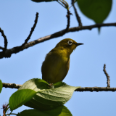
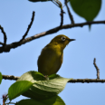

学名：Zosterops japonicus
分類：スズメ目メジロ科メジロ属
全長：12cm
分布：日本では冬季の寒冷地を除く全国で、低地から山地にまで広く分布する。市街地の緑地のある公園などでも見られる
生態：雑食だが、花の蜜や果汁を好み、育雛期には虫なども捕食する。
夏の間は涼しい山で過ごし、冬になると里山に降りて来る鳥。姿が美しく鳴き声の良さから人気があり、一時乱獲され たため絶命が心配されたが、最近は回復してきて街でも冬にはみ られるようになった。特に民家の庭先の梅の花や桜の花の蜜を好 んで集まる。